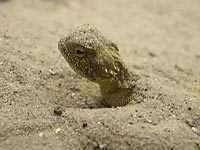

Кобра?

Может ползать
в глубине песка
Снимок сделан на выставке "Мир рептилий" в городском музее г.Батайск (пригород Ростова на Дону). Клетка не попала в кадр, и кажется, что змея на ночной дороге.
Всё же, наверно, это не кобра, судя по тому, что клетка была открыта. Там где были неопасные животные, и где посетители не слишком мешали животным, клетки были открыты и даже разрешалось что-то (кого-то) потрогать.